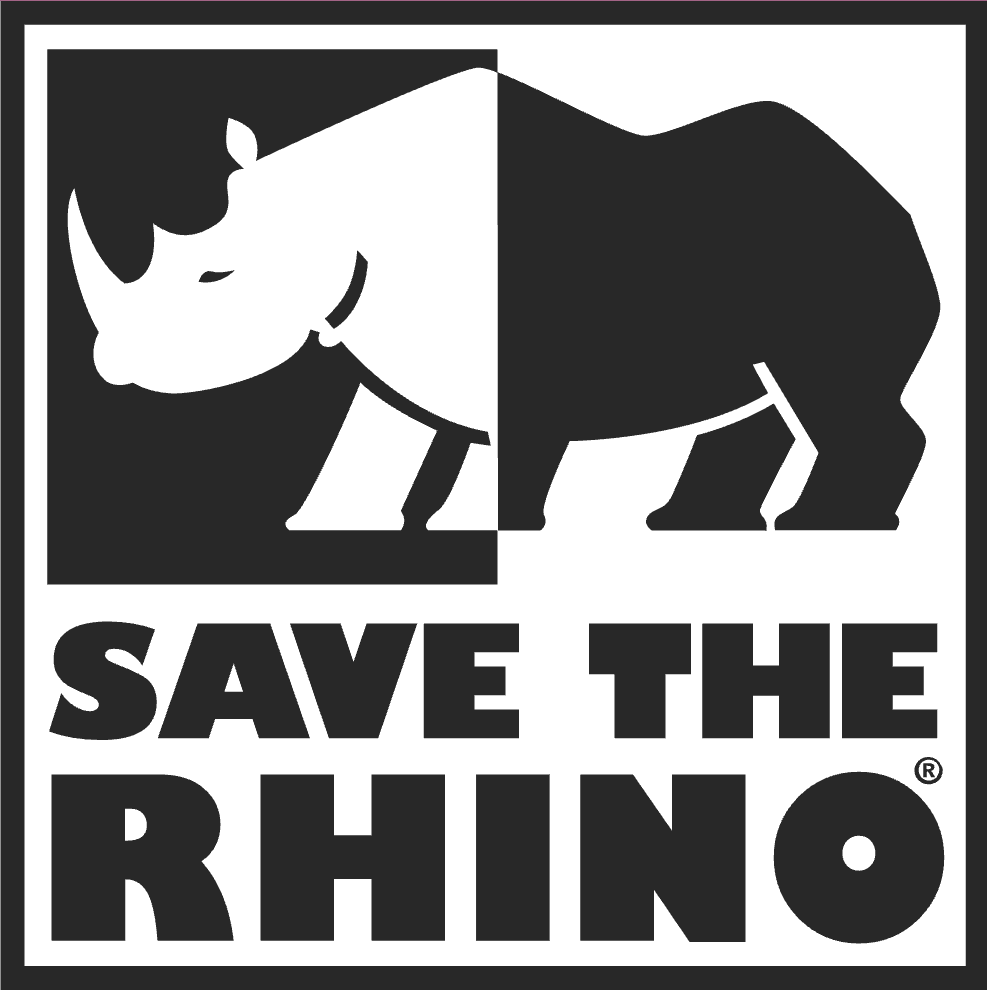

Can we save the Northern White Rhino?
Save the Rhino International is an advocacy and funding group that tracks the status of the subspecies, redirects lessons learned toward surviving rhino species (like Javan and Sumatran rhinos), and raises awareness globally.